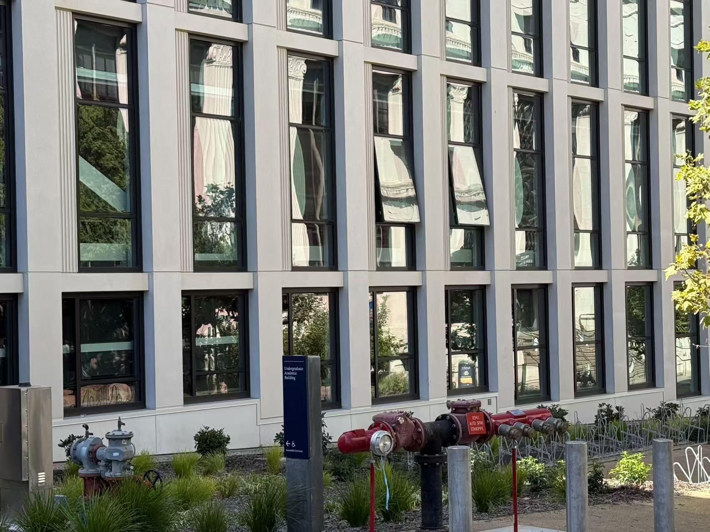
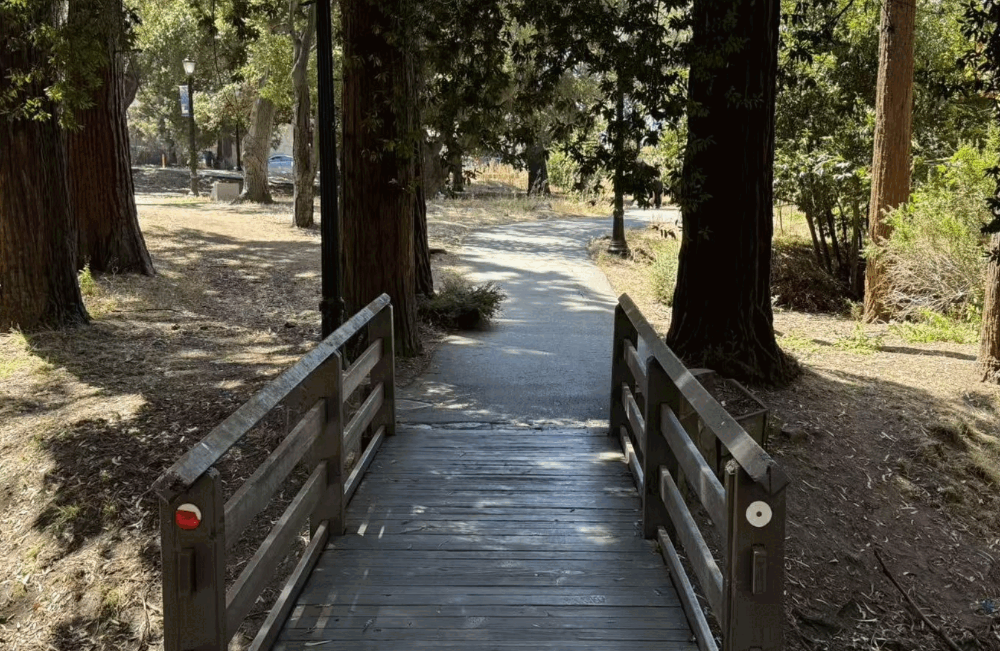

Part 1
Selfie: The Wrong Way vs. The Right Way
Two selfies of myself.


Part 2
Architectural Perspective Compression
Two photos of Undergraduate Building.

Part 3
The Dolly Zoom
Dolly zoom at Berkeley.

Part 1
Two selfies of myself.
Part 2
Two photos of Undergraduate Building.

Part 3
Dolly zoom at Berkeley.
